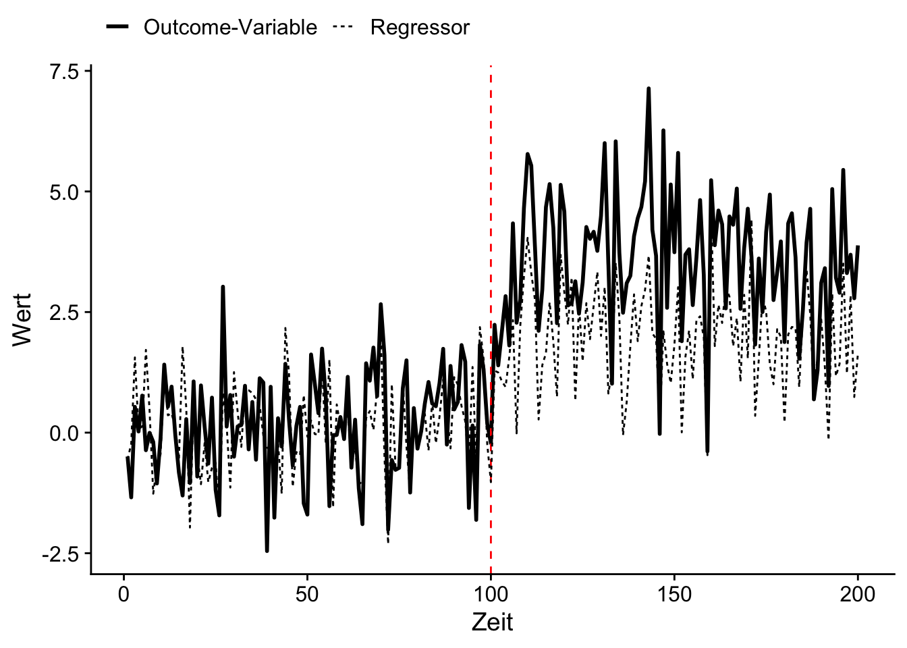
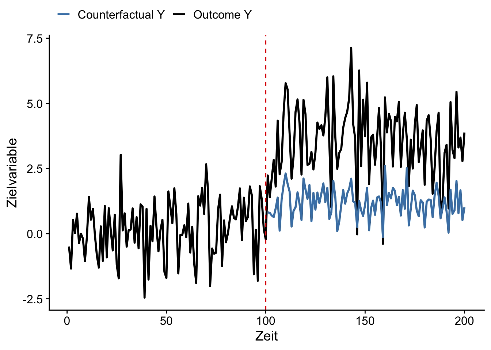

Eine Event Study ist ein empirischer Ansatz, um die Auswirkungen von zufälligen Ereignissen oder bestimmen Interventionen auf eine Outcome-Variable zu messen. Die zentrale Annahme hierbei ist, dass das untersuchte Ereignis exogen ist, also als ein ‘natürlicher’ Schock wirkt: Die Intervention löst eine Reaktion in der Outcome-Variable aus, ist jedoch unabhängig von anderen unbeobachtbaren Determinanten der Outcome-Variable, sodass Backdoors vermieden werden. Ist diese Annahme gegeben, so kann eine Event Study den kausalen Effekt einer Intervention vergleichsweise einfach ermitteln, indem überprüft wird, ob und wie stark die Outcome-Variable im Zeitraum nahe des Ereignis reagiert. Letzteres erfolgt häufig durch eine Analyse der durch das Event verursachten Variation in der Outcome-Variable mit einem ökonometrischen Modell.
10.1 Counterfactuals und Regression
Event Studies sind hilfreich, weil sie die Identifizierung kausaler Zusammenhänge in komplexen Situationen mit vielen potentiellen (unbeobachtbaren) Backdoor-Variablen ermöglichen können. Durch die Fokussierung auf einen klar definierten Zeitraum um das Ereignis und die Anwendung zusätzlicher Kontrollmechanismen (Regression) kann der interessierende Effekt oftmals plausibel identifiziert werden.
Für die Schätzug des Behandlungseffekts ist es nötig, einen plausiblen (kontrafaktischen) Vergleichswert für die nach der Intervention beobachteten Werte der Outcome-Variable zu finden. Hierbei gibt es drei wesentliche Vorgehensweisen:
Durschnittlichen Entwicklung als Counterfactual: Hierbei werden Mittelwerte der Outcome Variable vor und nach der Intervention vergleichen. Diese Methode ignoriert mögliche Zeiteffekte in der Outcome-Variable und sollte nur für kleine Zeiträume vor und nach der Intervention angewendet werden.
Vorhersage mit Vor-Event-Daten: Modelliere die Outcome-Variable basierend auf Daten vor dem Event und erhalte Vorhersagen für Perioden (unmittelbar) nach dem Event.
Vorhersage mit Nach-Event-Daten: Modelliere die Outcome basierend auf Daten vor dem Event unter Berücksichtigung weiterer Regressoren. Erhalte Vorhersagen für Perioden (unmittelbar) nach dem Event unter Einbezug der nach dem Event beobachteten Regressor-Werte.
In vielem polit-ökonomischen Anwendungen ist es plausibel, dass eine Intervention einen längerfristigen (konstanten) Effekt hat. In solchen Fällen kann ein Interkationsmodell1 geschätzt werden: \[\begin{align}
Y_t = \beta_0 + \beta_1 t + \beta_2 \textup{post}_t + \beta_3 \cdot t \cdot \textup{post}_t + \epsilon_t.\label{eq:eslinint}
\end{align}\] Hier ist \(t\) die Zeit-Variable und \(\textup{post}_t\) ein Dummy-Regressor für Perioden nach dem Event. Die Regression \(\eqref{eq:eslinint}\) modelliert also einen linearen Trend in der Outcome-Variable \(Y\), der sich vor und nach dem Event unterscheiden kann. Eine Schätzung mit Regressions ist außerdem hilfreich, weil für beobachtbare Determinanten von \(Y\), die möglicherweise durch das Event beeinflusst werden, kontrolliert werden kann. Solche “robusten” Spezifikationen erhöhen die plausibilität der Identifikationsstrategie und können eine präzisere Schätzung des Behandlungseffekts gewährleisten.
Modell \(\eqref{eq:eslinint}\) kann leicht auf Panel-Daten erweitert werden, wobei die zusätzliche Information aus der Querschnittsdimension die Schätzung eines zeitlichen Verlaufs des Interventionseffekts ermöglicht. Bei Verfügbarkeit können Beobachtungseinheiten, die nicht von der Intervention betroffen sind als Counterfactuals herangezogen werden. Wir betrachten die Anwendung einer Event-Study-Methodik mit Panel-Daten-Modellen in der Case Study in Kapitel 10.3.
Key Facts zu Event Studies
Eine Event Study misst Auswirkungen eines Ereignisses oder Interventionen auf eine über mehrere Perioden beobachtete Outcome-Variable.
Ziel ist die Schätzung des kausalen Effekt der Intervention durch die Analyse der beobachteten Variation in der Outcome-Variable über die Zeit, meist für Zeitpunkte nahe des Events.
Annahme: Das Event ist exogen. In empirischen Studien werden häufig quasi-experimentelle Forschungsdesigns verwendet (Events sind natürliche Schocks).
Regressionsmodelle können genutzt werden, um den Effekt der Intervention über die Zeit zu schätzen. Hierbei gewährleistet die Kontrolle für potentielle Confounder die Robustheit und Präzision der Schätzung des interessierenden Effekts.
10.2 Beispiel: Strukturbruch in Zeitreihe
Zur Illustration der Methodik simulieren wir Zeitreihendaten mit einem durch ein Ereignis in der Mitte des Beobachtungszeitraums ausgelösten Strukturbruch im Erwartungswert (der kausale Effekt des Events). Wir interessieren uns für den Effekt des Events auf die Variablen \(X_t\) und \(Y_t\).
Der hierfür verwendete DGP lautet \[\begin{align*}
X_t = &\, \alpha_1 \textup{post}_t + \epsilon_t,\\
\\
Y_t = &\, \beta_1 X_t + \beta_2 \textup{post}_t + \varepsilon_t,
\end{align*}\] für \(t=1,\dots,n\) mit \(\epsilon_t,\ \varepsilon_t \sim\,u.i.v. N(0,1)\). Der Dummy-Regressor \(\textup{post}_t\) ist definiert als \[\begin{align*}
\textup{post}_t =
\begin{cases}
1 \ \ \textup{für} &t > t_\textup{Event},\\
0 \ \ &\textup{sonst}
\end{cases}
\end{align*}\] wobei \(t_\textup{Event} = \lfloor n/2 \rfloor\). Für den Effekt des Events auf \(X_t\) und \(Y_t\) wählen wir \(\alpha_1 = 2\) und \(\beta_2 = 2\). Weiterhin ist \(\beta_1 = .75\). Wir generieren beide Zeitreihen für \(n=200\) Perioden.
Beachte das \(X_t\) ein Confounder bei der Ermittlung des Effekts auf \(Y_t\) ist: Das Event zum Zeitpunkt \(t=100\) hat einen kausalen Effekt von \(\alpha_1 = \beta_2 = 2\) auf beide Variablen. Da \(X_t\) einen Einfluss von \(\beta_1\cdot X_t = .75\cdot X_t\) auf \(Y_t\) hat, müssen wir für \(X_t\) kontrollieren, um die back door durch \(X_t\) zu schließen. Für \(X_t\) hingegen ist der Event-Regressor \(\textup{post}_t\) exogen.
library(ggplot2)library(cowplot)# Daten simulierenset.seed(123)# Parameter der Simulationn <-200# Anzahl der Beobachtungent_event <-floor(n/2) # Zeitpunkt des Ereignisseseffect_size <-2# Größe des Effekts nach dem Ereignis# Zeitindextime <-1:n# X generieren x <-ifelse(test = time <= t_event, yes =rnorm(n, mean =0), no =rnorm(n, mean = effect_size))# Y generierenpre_event_mean <- .75* xpost_event_mean <- pre_event_mean + effect_sizey <-ifelse(test = time <= t_event, yes =rnorm(n, mean = pre_event_mean), no =rnorm(n, mean = post_event_mean))# Zusammenführen der Datendata <-tibble(time = time, x = x,y = y, # Event bei t_eventpost =ifelse(test = time > t_event, yes =TRUE, no =FALSE ))# Überblickhead(data)
# A tibble: 6 × 4
time x y post
<int> <dbl> <dbl> <lgl>
1 1 -0.560 -0.494 FALSE
2 2 -0.230 -1.34 FALSE
3 3 1.56 0.534 FALSE
4 4 0.0705 0.0240 FALSE
5 5 0.129 0.768 FALSE
6 6 1.72 -0.364 FALSE
# Plotten der Zielvariable und Regressorggplot(data, aes(x = time)) +geom_line(aes(y = y, linetype ="Outcome-Variable"), size =1) +geom_vline(xintercept = t_event, linetype ="dashed", color ="red") +geom_line(aes(y = x, linetype ="Regressor")) +labs(x ="Zeit", y ="Wert", color ="Legende") +scale_linetype_discrete("") +theme_cowplot() +theme(legend.position ="top")

10.2.1 Event-Study-Schätzung: Kausaler Effekt für \(X_t\)
Wir schätzen zunächst den Effekt des Events auf \(X_t\). Die Differenz der Mittelwerte nach und vor des Events ist ein erwartungstreuer und konistenter Schätzer für \(\alpha_1\). Dieser Schätzer ist äquivalent zum KQ-Schätzer von \(\alpha_1\) im Modell \[\begin{align}
X_t = \alpha_1 \textup{post}_t + u.
\end{align}\]
# Effekt-Schätzung für X# Post-mean vs. Pre-Meandata %>%group_by(post) %>%summarise(x_mean =mean(x)) %>%pull(x_mean) %>%diff()
[1] 1.873371
# ...ist äquivalent zum KQ-Schätzerlm(formula = x ~ post,data = data) %>%summary()
Call:
lm(formula = x ~ post, data = data)
Residuals:
Min 1Q Median 3Q Max
-2.42968 -0.64741 0.01173 0.69143 2.60768
Coefficients:
Estimate Std. Error t value Pr(>|t|)
(Intercept) 0.09041 0.09778 0.925 0.356
postTRUE 1.87337 0.13829 13.547 <2e-16 ***
---
Signif. codes: 0 '***' 0.001 '**' 0.01 '*' 0.05 '.' 0.1 ' ' 1
Residual standard error: 0.9778 on 198 degrees of freedom
Multiple R-squared: 0.481, Adjusted R-squared: 0.4784
F-statistic: 183.5 on 1 and 198 DF, p-value: < 2.2e-16
10.2.2 Event-Study-Schätzung: Kausaler Effekt für \(Y_t\)
Für die Schätzung von \(\beta_2\) liefert diese Vorgehensweise einen verzerrten Schätzer des kausalen Effekts des Events auf \(Y_t\).
# Verzerrte Effekt-Schätzung für Y# Post-mean vs. Pre-Meandata %>%group_by(post) %>%summarise(y_mean =mean(y)) %>%pull(y_mean) %>%diff()
[1] 3.405051
# ...ist äquivalent zum KQ-Schätzerlm(formula = y ~ post,data = data) %>%summary()
Call:
lm(formula = y ~ post, data = data)
Residuals:
Min 1Q Median 3Q Max
-3.9658 -0.8354 0.0923 0.8565 3.5575
Coefficients:
Estimate Std. Error t value Pr(>|t|)
(Intercept) 0.1737 0.1241 1.40 0.163
postTRUE 3.4051 0.1754 19.41 <2e-16 ***
---
Signif. codes: 0 '***' 0.001 '**' 0.01 '*' 0.05 '.' 0.1 ' ' 1
Residual standard error: 1.241 on 198 degrees of freedom
Multiple R-squared: 0.6555, Adjusted R-squared: 0.6537
F-statistic: 376.7 on 1 and 198 DF, p-value: < 2.2e-16
Eine bessere Alternative ist die Schätzung des Effekts anhand der Vorhersage von \(Y_t\) durch \(X_t\) für Beobachtungen von \(X_t\)nach dem Event. Hierfür schätzen wir das Modell \[\begin{align}
Y_t = \beta_0 + \beta_1 X_t + e_t\label{eq:xpredy}
\end{align}\] mit Beobachtungen vor dem Event und berechnen vorhergesagte Werte \(\widehat{Y}_t\) mit Beobachtungen \(X_t\)nach dem Event.
# Modell zur Vorhersage von Y mit Xmodel_pre_event <-lm(formula = y ~ x, # Beobachtungen vor dem Ereignisdata = data %>%filter(!post))# Vorhersage von Y mit Xdata <- data %>%mutate(predicted =predict(object = model_pre_event, newdata = data ) )
Die nachfolgende Grafik zeigt die mit \(X_t\) vorhergesagte Entwicklung von \(Y_t\) nach dem Event.
# Vorhersage von Y und X plottenggplot(data, aes(x = time)) +geom_line(aes(y = y, color ="Outcome Y"), size =1) +geom_vline(xintercept = t_event, color ="red", linetype ="dashed") +geom_line(data = data %>%filter(post), mapping =aes(y = predicted, color ="Counterfactual Y"),size =1 ) +labs(x ="Zeit", y ="Zielvariable") +scale_color_manual("",values =c("Outcome Y"="black", "Counterfactual Y"="steelblue" ) ) +theme_cowplot() +theme(legend.position ="top")

Ein Schätzer des Effekts basierend auf dieser Vorhersage ist die Differenz zwischen dem mittleren beobachteten und vorhersagten Werten von \(Y_t\) (counterfactual).
Unter der Annahme, dass der kausale Effekt des Events langfristig (für sämtliche Beobachtungen mit \(t>t_\textup{Event}\)) auf \(Y_t\) wirkt, können wir \(\beta_2\) effizienter mit einem Interaktionsmodell schätzen. Hierbei vermeiden wir die Unsicherheit in den vorhergesagten Werten \(\widehat{Y}_t\), die aus der Schätzung des Modells \(\eqref{eq:xpredy}\) resultiert.
lm(formula = y ~ x + post,data = data) %>%summary()
Call:
lm(formula = y ~ x + post, data = data)
Residuals:
Min 1Q Median 3Q Max
-2.7683 -0.5012 0.1047 0.6146 2.5857
Coefficients:
Estimate Std. Error t value Pr(>|t|)
(Intercept) 0.10575 0.10044 1.053 0.294
x 0.75111 0.07284 10.311 <2e-16 ***
postTRUE 1.99795 0.19675 10.155 <2e-16 ***
---
Signif. codes: 0 '***' 0.001 '**' 0.01 '*' 0.05 '.' 0.1 ' ' 1
Residual standard error: 1.002 on 197 degrees of freedom
Multiple R-squared: 0.7762, Adjusted R-squared: 0.774
F-statistic: 341.7 on 2 and 197 DF, p-value: < 2.2e-16
10.3 Case Study: Abschreckungseffekte durch Strafgesetzgebung
David S. Abrams (2012a) untersucht den Abschreckungseffekt drohender Inhaftierung für Straftaten anhand von Daten zu verschärfter Strafgesetzgebung (“Add-on laws”) in den USA. Solche Gesetze erhöhen in der Regel die Strafen für Delikte, insbesondere wenn nachweißlich Schusswaffen verwendet werden. Die Studie nutzt eine Event-Study-Methodik, um die Auswirkungen dieser Gesetzesänderung auf die Kriminalitätsraten für verschiedene Straftaten zu analysieren. Dabei wird der Zeitpunkt der tatsächlichen Gesetzeseinführung in verschiedenen US-Bundesstaaten herangezogen, um den kausalen Abschreckungseffekt einer drohenden Gefängnisstrafe anhand von Statistiken in den unmittelbaren Folgeperioden zu isolieren.
10.3.1 Identifikationsstrategie
Der Fokus des Forschungsdesigns liegt auf der Unterscheidung zwischen zwei wesentlichen Wirkungskanälen von verschärften Strafgesetzen auf die Kriminalitätsrate:
Abschreckungseffekt: Die Aussicht auf eine längere Inhaftierung erzielt einen Abschreckungseffekt, der sich ‘positiv’ auf die Kriminalitätsrate auswirkt (im Sinne einer verringerten Kriminalität). Dies ist der vermutete (kausale) Effekt.
Inhaftierungseffekt: Inhaftierte Individuen können keine Straftaten begehen und verringern daher die Kriminalitätsrate. Dieser Effekt ist insbesondere für Straftaten mit großer Rückfälligkeit plausibel (etwa Beschaffungskriminalität). Für längere Haftstrafen erwarten wir daher einen Rückgang dieser Kriminalitätsraten nach der Verschärfung der Gesetze.
Der in 2. beschriebene Effekt der Gesetzesverschärfung kann sich erst nach der im Rahmen der alten Gesetzgebung verhängten durchschnitlichen Mindesthaftstrafe einstellen: Der verringernde Effekt auf die Kriminalitätsrate zeigt sich erst in den Daten, nachdem Straftäter länger als gemäß der alten Gesetzgebung üblich inhaftiert sind. Rückgänge der Kriminalitätrate die in diesem Zeitraum unmittelbar nach der Gesetztesverschärfung gemessen werden, können also auf den Abschreckungseffekt zurückgeführt werden. Anhand von Statistiken zu verhängten Strafen für Überfälle mit Schusswaffen ermittelt David S. Abrams (2012a) ein mittleres Mindest-Strafmaß von drei Jahren.
Die Exogenität der Verabschiedung von Add-On-Gesetzen wird in David S. Abrams (2012a) wiefolgt begründet: Obwohl die meisten Zusatzgesetze zu Schusswaffen in den 1970er Jahren erlassen wurden und es gemeinsame Trends in den Kriminalitäsraten der Bundesstaaten gibt, sind die genauen Zeitpunkte der Einführung solcher Gesetze aufgrund einer Vielzahl von Eigenheiten des politischen Prozesses in den Bundesstaaten weitgehend zufällig. Die Exogenität ist plausibel, wenn wir (durch Regression) Backdoors aufgrund Bundesstaat-spezifischer (konstanter und zeit-variierender) Faktoren schließen.
10.3.2 Replikation mit R
Der Datensatz Abrams2012.dta ist ein Auszug der Daten aus dem Replikationspaket (David S. Abrams 2012b), welches hier eingesehen werden kann. Die Daten liegen im STATA-Format .dta vor und können mit haven::read_dta() eingelesen werden.
Die Beobachtungen (Zeilen) in abrams sind Kriminalstatistiken von staatlichen Rechtsberichterstattungsagenturen, die im Rahmen der Uniform Crime Reports des FBI landesweit für den Zeitraum 1965 bis 2002 zusammengetragen wurden. Eine Erläuterung der verfügbaren (ausschließlich numerischen) Variablen erfolgt in Tabelle 10.1.
Tabelle 10.1: Abrams2012.dta – Kriminalität in US-Bundesstaaten.
Variable
Beschreibung
pcralloffense
Pro-Kopf-Kriminalitätsrate
pcrrobgun
Pro-Kopf-Rate Raubüberfälle mit Schusswaffen
pcrasltgun
Pro-Kopf-Rate Angriff mit Schusswaffen
pcrburgtot
Einbruch
pcrmurder
Mord
lnpcrrobgun
Log Pro-Kopf-Rate Raubüberfälle mit Schusswaffen
FSTATE
Bundesstaat
year
Jahr
ymm
Gesetzliche Mindeststrafe in Kraft
relyr
Perioden rel. zur Einführung von Add-On-Law
everaddon
Dummy: Jemals Add-on-Law?
yaddon
Dummy: 1 Jahr nach Einführung Add-On-Law
twoyears_add
Dummy: 2 Jahre nach Einführung Add-On-Law
threeyears_add
Dummy: 3 Jahre nach Einführung Add-On-Law
dcpoverty
Armutsquote
dcunemp
Arbeitlosenquote
dcblack_per
Bevölkerungsstruktur
dcp15t17
Anteil 15 bis 17 Jährige
dcp18t24
Anteil 18 bis 24 Jährige
dcp25t34
Anteil 25 bis 34 Jährige
dcpolice_per1
Anteil Polizeikräfte an Bevölkerung
dcprison_per1
Anteil Inhaftierte an der Bevölkerung
post74
Dummy: Beobachtung nach 1974
statepop
Bevölkerung
Wir replizieren nachfolgend Kernergebnisse aus David S. Abrams (2012a) hinsichtlich des Abschreckungseffekts von drohenden Gefängnisstrafen auf die Begehung von Raubüberfällen mit Schusswaffen.
Für einen ersten Eindruck der Entwicklung von Kriminalitätsraten in US-Bundesstaaten, die über den Beobachutungszeitraum Add-On-Gesetze erlassen haben, berechnen wir zunächst mit der Population (statepop) gewichtete Mittelwerte vor und nach der Einführung dieser Gesetzte.2 Hierzu verwenden wir eine Teilmenge des Panel-Datensatzes abrams mit Beobachtungen zu 7 Zeitpunkten vor sowie 6 Zeitpunkten nach dem Inkraftreten der Gesetzesverschärfung.
# Datensatz für Vergleich mittlerer Kriminalität vorbereitenabrams_t1 <- abrams %>%mutate(before =case_when( relyr >0~"Danach", T ~"Bevor" ) ) %>%filter(relyr >=-7& relyr <=6) %>%rename(`Angriff mit Schusswaffen`= pcrasltgun,`Einbruch`= pcrburgtot,`Raubüberfall mit Schusswaffe`= pcrrobgun,`Mord`= pcrmurder )
Für die tabellarische Zusammenfassung nutzen wir modelsummary::datasummary(). Über das Argument formula definieren wir die zu berechnenden Statistiken diagis::weighted_mean und diagis::weighted_se für vier Kategorien von Delikten. Der Operator * bewirkt eine gruppierte Berechnung dieser Statistiken (gemäß before).
library(modelsummary)# Tabellarische Zusammenfassungdatasummary(formula =`Angriff mit Schusswaffen`+`Einbruch`+`Mord`+`Raubüberfall mit Schusswaffe`~ (Factor(before) * ( ( (mean = diagis::weighted_mean) + (SE = diagis::weighted_se) )*Arguments(na.rm =TRUE, w = statepop) ) ), data = abrams_t1 )
Tabelle 10.2: Mittlere Kriminalitätsraten je 100k Einwohner vor und nach Einführung strafverschärfender Gesetze
tinytable_mot3g5pvqakw7gtdn62w
Bevor
Danach
mean
SE
mean
SE
Angriff mit Schusswaffen
108.50
6.15
98.13
5.13
Einbruch
1760.60
44.36
1692.76
96.91
Mord
15.77
0.80
13.21
1.12
Raubüberfall mit Schusswaffe
218.59
15.91
130.72
7.93
Tabelle 10.2 zeigt, dass es in den Zeiträumen nach Gesetzesverschärfungen im Mittel zu einer Verringerung der betrachteten Pro-Kopf-Kriminalitätsraten kommt.3 Da David S. Abrams (2012a) sich auf die Analyse des Effekts auf Delikte unter Gebrauch von Schusswaffen fokussiert, berechnen wir weiterhin Trends in der allgemeinen Pro-Kopf-Kriminalität (pcralloffense) und Raubüberfälle mit Schusswaffen, (pcrrobgun). Wir unterscheiden hierbei zusätzlich zwischen Bundesstaaten, die im Beobachtungszeitraum Add-On-Gesetzte verabschiedet haben (everaddon) und solchen ohne.
Wir plotten die berechneten Trends in plot_dat mit entsprechender Farbgebung mit ggplot2(). Das Ergebnis (Abbildung 10.1) ist eine Reproduktion von Abbildung 2 in David S. Abrams (2012a).
Abbildung 10.1: Populations-gewichtete mittlere Pro-Kopf-Kriminalitätsraten für US-Bundesstaaten (1965–2002)
Abbildung 10.1 zeigt einen starken Anstieg der Kriminalität in den 1960er und 1970er Jahren, insbesondere für Rabüberfälle mit Schusswaffen. Weiterhin sind die Trends in Staaten mit und ohne Zusatzstrafen deutlich korreliert. Die Entwicklung der Pro-Kopf-Kriminalität insgesamt schwächt sich anschließend ab und folgt ab den 1990er Jahren einem rückläufigen Trend. Es ist auffällig, dass sowohl die bewaffneten Raubüberfälle als auch die allgemeine Kriminalität zu Beginn des Beobachtungszeitraums für Staaten mit Add-on-Gesetzen höher sind, sich dies aber im letzten Jahrzehnt ebenfalls umkehrt. Wie in David S. Abrams (2012a) erläutert, könnte dies sowohl auf verschäfte Gesetze als auch auf Variation zwischen den Bundesstaaten zurückzuführen sein. Statistische Verfahren zur Schätzung des Effekts also sollten zwischen diesen Möglichkeiten unterscheiden können, bspw. durch die Kontrolle für Fixed Effects und Zeit-Trends.
10.3.2.1 Basis-Spezifikation
Wir folgen David S. Abrams (2012a) und schätzen zunächst eine Basis-Spezifikation für eine balancierte Teilstichprobe aus abrams. Hierbei werden lediglich Bundesstaaten mit Datenpunkten mindestens 7 Jahre vor und maximal 6 Jahre nach der Einfühung eines Add-On-Gesetzes berücksichtigt. Das Regressionsmodell ist \[\begin{align}
\log\textup{Rob}_{at} = \beta \textup{AddOn}^i_{st} + \lambda_s + \gamma_t + x_{st} + \epsilon_{at},\label{eq:abramsbase}
\end{align}\] wobei \(\log\textup{Rob}_{at}\) die logarithmierte Pro-Kopf-Rate für Überfälle mit Schusswaffe (lnpcrrobgun). \(\textup{AddOn}^i_{st}\) ist eine Dummy-Variable die 1 ist für Beobachtungen des Bundesstaats \(s\) in Jahr \(t\), wenn die Einführung des Add-On-Gesetzes \(i\) Jahre zurückliegt. Wir folgen David S. Abrams (2012a) und betrachten Modelle mit \(i\in\{1,2,3\}\), d.h. wir unterscheiden zwischen Effekten bis zu drei Jahren (durchschnittliche Mindeststrafe nach alter Gesetzgebung) nach Einführung eines Add-On-Gesetzes.
\(\lambda_s\) und \(\gamma_t\) sind Fixed Effects für Bundesstaaten und Perioden. \(x_{st}\) repräsentiert alle Kontrollvariablen auf Bundesstaatenebene. Hierbei werden stets sämtliche Variablen mit einer Bezeichnung beginnend mit dc berücksichtigt, vgl. Tabelle 10.1. Weiterhin wird mit ymm für den Effekt eines aktiven Gesetzes für eine Mindeststrafe kontrolliert.
Eine Erweiterung von \(\eqref{eq:abramsbase}\) kontrolliert für Bundesstaat-spezifische Zeit-Trends4\(\omega_s\cdot t\), \[\begin{align}
\log\textup{Rob}_{at} = \beta \textup{AddOn}^i_{st} + \lambda_s + \gamma_t + \omega_s\cdot t + x_{st} + \epsilon_{at}.\label{eq:abramstrend}
\end{align}\]
Anhand von \(\eqref{eq:abramstrend}\) kontrollieren wir zusätzlich für über die Zeit variierende Faktoren in \(\log\textup{Rob}_{at}\) welche die Wahrscheinlichkeit einer Verabschiedung von Add-On in den jeweiligen Bundesstaaten beeinflussen. Diese Spezifikation ist also etwas konservativer als Modell \(\eqref{eq:abramsbase}\), da hier lediglich der Zeitpunkt der Einführung der Gesetze exogen sein muss, siehe die Diskussion in Abschnitt II in David S. Abrams (2012a).
Für die komfortable Schätzung von Modellen mit Fixed Effects und die Berechnung von cluster-robusten Standardfehlern (Clustering auf Bundesstaaten-Ebene) verwenden wir fixest::feols(), siehe Kapitel 7 für Details zur Schätzung von Panel-Daten-Modellen.
Aufgrund eine Diskontinuität in Daten für die Beobachtungen mehrerer Variablen im Jahr 1974 Schätzen wir \(\eqref{eq:abramsbase}\) und \(\eqref{eq:abramstrend}\) jeweils zusätzlich für Daten nach 1974. Insgesamt schätzen wir also neun Modelle:
Spezifikation \(\eqref{eq:abramsbase}\), jeweils einmal für \(i\in\{1,2,3\}\)
Spezifikation \(\eqref{eq:abramstrend}\), jeweils einmal für \(i\in\{1,2,3\}\)
Spezifikation \(\eqref{eq:abramstrend}\), jeweils einmal für \(i\in\{1,2,3\}\) und für Beobachtungen mit \(t>1974\).
Vor der Schätzung der Spezifikationen mit Trends transformieren wir FSTATE zu einer Variable des kategorischen Typs factor, damit Bundesstaat-spezifische Trends mit FSTATE:year über das Argument fml in feols() definiert werden können.
Wir fassen die Ergebnisse mit tabellarisch mit modelsummary::modelsummary() zusammen. Hierzu sammeln wir die Modell-Objekte gemäß der Struktur der zugrundeliegenden Spezifikation in benannten Listen und erzeugen eine nach dem Zeithorizont nach der Einführung eines Add-On-Gesetzes gruppierte Tabelle. Für eine bessere Übersicht berücksichtigen wir hierbei jeweils nur die Koeffizienten für den Zeitpunkt der Gesetzesverschärfung und die Dummyvariable für gesetzliche Mindeststrafen (ymm). Über das Argument coef_map definieren wir entsprechende Labels für diese geschätzten Koeffizienten.
library(modelsummary)# Modelle in benannten Listen sammelnpanels <-list("1 Jahr nach Add-On"=list("(1) Basis"= mod_basis_1J,"(2) Trends"= mod_trends_1J,"(2) Nach 74"= mod_trends_1J_post ),"2 Jahre nach Add-On"=list("(1) Basis"= mod_basis_2J,"(2) Trends"= mod_trends_2J,"(2) Nach 74"= mod_trends_2J_post ),"3 Jahre nach Add-On"=list("(1) Basis"= mod_basis_3J,"(2) Trends"= mod_trends_3J,"(2) Nach 74"= mod_trends_3J_post ))# Tabellarische Zusammenfassungmodelsummary(models = panels,shape ="rbind",coef_omit ="^(?!.*(add|ymm)).*$",stars = T,gof_omit ="^(?!(R2*)$).*",coef_map =c("yaddon"="Add-On","twoyears_add"="Add-On","threeyears_add"="Add-On","ymm"="Mindeststrafe" ),notes =c("Abh. Var.: Log Kriminalitätsrate: Raubüberfälle mit Schusswaffen", "Cluster-robuste Standardfehler: Bundesstaat","Fixed Effects: Bundesstaat + Jahr" ),output ="gt") %>%tabopts()
Tabelle 10.3: abrams – Einfluss von Add-on-Gesetzen auf Kriminalitätsrate: Raubüberfälle mit Waffen (David S. Abrams 2012a)
(1) Basis
(2) Trends
(2) Nach 74
1 Jahr nach Add-On
Add-On
-0.048
-0.022
-0.013
(0.031)
(0.019)
(0.022)
Mindeststrafe
-0.119
-0.128
-0.099
(0.099)
(0.092)
(0.102)
R2
0.182
0.190
0.187
2 Jahre nach Add-On
Add-On
-0.110**
-0.078***
-0.058*
(0.033)
(0.019)
(0.022)
Mindeststrafe
-0.098
-0.105
-0.093
(0.096)
(0.091)
(0.104)
R2
0.183
0.191
0.187
3 Jahre nach Add-On
Add-On
-0.127**
-0.090**
-0.054*
(0.040)
(0.024)
(0.024)
Mindeststrafe
-0.096
-0.103
-0.096
(0.095)
(0.090)
(0.104)
R2
0.183
0.191
0.187
+ p < 0.1, * p < 0.05, ** p < 0.01, *** p < 0.001
Abh. Var.: Log Kriminalitätsrate: Raubüberfälle mit Schusswaffen
Cluster-robuste Standardfehler: Bundesstaat
Fixed Effects: Bundesstaat + Jahr
Die in Tabelle 10.3 zusammengefassten Ergebnisse deuten darauf, dass es im ersten Jahr nach der Einführung eines Add-On-Gesetzes keinen Signifikanten Effekt auf die Kriminalitätsrate für Raubüberfälle mit Schusswaffen gibt, wenngleich der geschätzte Koeffizient in sämtlichen Modellen negativ ist und damit konsistent mit dem vermuteten Abschreckungseffekt ist.In den Folgeperioden finden wir signifikante negative Effekte verschärfter Gesetze auf die Kriminalitätsrate von bis zu 12.7% (Effekt in Modell \(\eqref{eq:abramsbase}\) nach drei Jahren). Die konservativste Spezifikation (Modell \(\eqref{eq:abramstrend}\) mit Beobachtungen nach 1974) liefert Evidenz eines Rückgangs der Kriminalität durch Abschreckungseffekte in Höhe von etwa 5% innerhalb der ersten drei Jahre nach der Gesetzesänderung. Weiterhin ist der geschätzte Effekt von gesetzlichen Vorschriften zu Mindeststrafen zwar durchweg negativ, jedoch insignifikant.
10.3.2.2 Event-Study-Regression
Für eine detalliertere Einschätzung des zeitlichen Verlaufs des Effekts verschärfender Gesetze betrachtet David S. Abrams (2012a) eine Spezifikation ähnlich zu Jacobson, LaLonde, und Sullivan (1993), \[\begin{align}
\log\textup{Rob}_{at} = \sum_{i\in[-6,6]} \beta_i\cdot\textup{AddOn}^i_{st} + \lambda_s + \gamma_t + \omega_s\cdot t + x_{st} + \epsilon_{at},\label{eq:abramsesreg}
\end{align}\] mit perioden-spezifischen Effekten \(\beta_i\) in einem Zeitfenster von sechs Jahren vor und nach Gesetzesänderungen, wobei die \(\textup{AddOn}^i_{st}\) definiert sind wie in \(\eqref{eq:abramsbase}\) Für die Schätzung von Modell \(\eqref{eq:abramsesreg}\) mit R zeigen wir zunächst, wie diese Dummies anhand der Variable relyr effizient erzeugt werden können.
# Ausprägungen von 'relyr'abrams %>%pull(relyr) %>%table()
Hierfür generieren wir mit tidyr::pivot_wider() eine Variante des Datensatzes, abrams_es, in der Beobachtungen von relyr spaltenweise in binärer Kodierung abgetragen sind. Diese Variablen erhalten das Präfix D. Für leichtere Handhabung der Variablennamen innerhalb von feols() wird das negative Vorzeichen wird druch dplyr::rename_with() in einen Underscore umgewandelt.
Wir schätzen nun die Regression \(\eqref{eq:abramsesreg}\), sowohl mit als auch ohne Bundesstaat-spezifische Zeit-Trends und fassen die Ergebnisse anschließend mit modelsummary() zusammen.
Tabelle 10.4: KQ-Schätzung der Event-Study-Spezifikation: Koeffizienten der Dummies (David S. Abrams 2012a)
Ohne Trends
Zeit-Trends
D_6
0.253**
0.179**
(0.080)
(0.061)
D_5
0.179*
0.117
(0.075)
(0.071)
D_4
0.192**
0.140+
(0.068)
(0.071)
D_3
0.194**
0.174*
(0.065)
(0.081)
D_2
0.215**
0.195***
(0.072)
(0.055)
D_1
0.175*
0.168**
(0.087)
(0.048)
D0
0.093
0.088
(0.078)
(0.059)
D1
-0.019
-0.019
(0.078)
(0.060)
D2
-0.134
-0.133*
(0.082)
(0.063)
D3
-0.119
-0.101
(0.095)
(0.075)
D4
-0.015
-0.048
(0.098)
(0.090)
D5
0.026
-0.018
(0.087)
(0.067)
D6
0.027
0.031
(0.066)
(0.045)
R2
0.169
0.180
+ p < 0.1, * p < 0.05, ** p < 0.01, *** p < 0.001
Abh. Var.: Log Kriminalitätsrate: Raubüberfälle mit Schusswaffen
Cluster-robuste Standardfehler: Bundesstaat
Fixed Effects: Bundesstaat + Jahr
Die statistische Zusammenfassung beider Event-Study-Spezifikationen in Tabelle 10.4 untermauern die Ergebnisse aus Tabelle 10.3:
Die positiven geschätzten Koeffizienten der Dummies für Zeitpunkte vor der Einführung von Add-On-Gesetzen (\(i=-6,\dots,-1\)) sind signifikant und zeigen einen stabilen Verlauf der Kriminalitätsrate an.
Die negativen, nicht-signifikant von 0 verschiedenen geschätzten Koeffizienten nach der Einführung von Add-On-Gesetzen (\(i=0,\dots,6\)) sind Evidenz für einen Rückgang der Pro-Kopf-Kriminalitätsrate für Raubüberfälle mit Schusswaffen im Folgezeitraum.
Für eine grafische Veranschaulichung der zeitlichen Entwicklung des geschätzten Effekts plotten wir die Schätzungen aus Tabelle 10.4 zusammen mit einem 1-Standardfehler-Intervall.5 Hierzu lesen wir zunächst die geschätzten Koeffizienten und Standardfehler aus dem Objekten abrams_mod_es und abrams_mod_es_trends aus, berechnen die zugehörigen Konfidenzintervalle und sammeln die Ergebnisse unter Verwendung einer Indikatorvariable für das zugrundeliegende Modell in einem tibble-Objekt
# Koeffizienten: Modell mit Trendcoefficients_1 <-coef(abrams_mod_es_trends)std_errors_1 <-se(abrams_mod_es_trends)# Koeffizienten: Modell ohne Trendcoefficients_2 <-coef(abrams_mod_es)std_errors_2 <-se(abrams_mod_es)# Subset von i = -6,...,0,...,6 auslesenevents <--6:6event_names <-names(coefficients_1)[1:13]# Schätzungen je Modell sammelnplot_data_1 <-tibble(Modell ="Mit Trends",Event = events,Estimate = coefficients_1[event_names],SE = std_errors_1[event_names])plot_data_2 <-tibble(Modell ="Ohne Trends",Event = events,Estimate = coefficients_2[event_names],SE = std_errors_2[event_names])# Datenpunkte sammelnplot_data <-bind_rows(plot_data_1, plot_data_2) %>%# 1-Standardfehler-Intervallmutate(CI_Lower = Estimate - SE,CI_Upper = Estimate + SE )
Abbildung 10.2: Event-Study-Regression – Geschätze Rate: Raubüberfälle rel. zur Einführung von Add-On-Gesetzen
Beachte, dass lediglich die Änderungen der Koeffizienten in Abbildung 10.2 eine sinnvolle Interpretation haben: Die absoluten Werte auf der Y-Achse sind nicht aussagekräftig, da sie aus Regressionen mit mehreren Regressoren mit von Null verschiedenen Mittelwerten stammen.
Eine Auffälligkeit in Abbildung 10.2 ist, dass die mittlere Kriminalitätsrate bereits eine Periode vor dem Zeitpunkt der Gesetzeseinführung eine Trendumkehr aufzuweisen scheint. David S. Abrams (2012a) weißt darauf hin, dass potenzielle Straftäter durch die laufende öffentliche Debatte und Diskussion über das Gesetz erfahren und ihr Verhaltensweisen in Erwartung der Gesetzesänderung anpassen könnten. Die emprische Studienlage hinsichtlich eines solches Verhalten ist jedoch nicht eindeutig, siehe die Diskussion in David S. Abrams (2012a), Abschnitt IV B.
10.4 Zusammenfassung
Mit Event Studies können die Auswirkungen spezifischer Ereignisse oder Interventionen auf eine über die Zeit beobachtete Outcome-Variable untersucht werden. Die zugrunde liegende Annahme für die Identifizierbarkeit des kausalen Effekts ist, dass das untersuchte Event als exogener Schock fungiert, der die Outcome-Variable beeinflusst, jedoch unabhängig von anderen unbeobachtbaren Einflussfaktoren ist, sodass die der Front-Door-Pfad isoliert werden kann.
Der Effekt wird meist in einem zeitlichen Umfeld nahe des Ereignisses analysiert. Zur Bestimmung eines kontrafaktischen Vergleichswerts für die Outcome-Variable nach dem Event kann die Prognose des Outcomes hilfreich sein. Für die präzise Schätzung des Behandlungseffekts werden häufig Regressionsmodelle herangezogen, die es ermöglichen, zeitliche Veränderungen in der Outcome-Variable zu modellieren und zusätzliche Kontrollvariablen zu berücksichtigen. Dadurch wird die Robustheit und Genauigkeit der Ergebnisse erhöht, was insbesondere bei der Analyse langfristiger Interventionseffekte in komplexen ökonomischen und politischen Kontexten von relevant ist.
Abrams, David S. 2012a. „Estimating the Deterrent Effect of Incarceration Using Sentencing Enhancements“. American Economic Journal: Applied Economics 4 (4): 32–56. https://doi.org/10.1257/app.4.4.32.
Abrams, David S. 2012b. „Replication data for: Estimating the Deterrent Effect of Incarceration Using Sentencing Enhancements“. ICPSR - Interuniversity Consortium for Political; Social Research. https://doi.org/10.3886/E113838V1.
Jacobson, Louis S., Robert J. LaLonde, und Daniel G. Sullivan. 1993. „Earnings Losses of Displaced Workers“. The American Economic Review 83 (4): 685–709. http://www.jstor.org/stable/2117574.
Der Ansatz \(\eqref{eq:eslinint}\) wird auch als segmentierte Regression bezeichnet.↩︎
Die Mittelwerte hier und sämtliche Punktschätzer in den nachfolgenden Regressionen sind bevölkerungsgewichtet, sodass Statistiken von Behörden, die größere Bevölkerungsteile abdecken, einen größeren Einfluss auf die Schätzung haben als Behörden in Regionen mit kleinerer Population.↩︎
Tabelle 10.2 reproduziert Teilergebnisse von Tabelle 1 in David S. Abrams (2012a).↩︎
Für die Implementierung in R wählen wir \(\omega_s = \beta_s \cdot D_s\), wobei \(\beta_s\) der Trend-Koeffizient für Bundesstaat \(s\) und \(D_s\) ein Indikator für den Staat \(s\) ist.↩︎